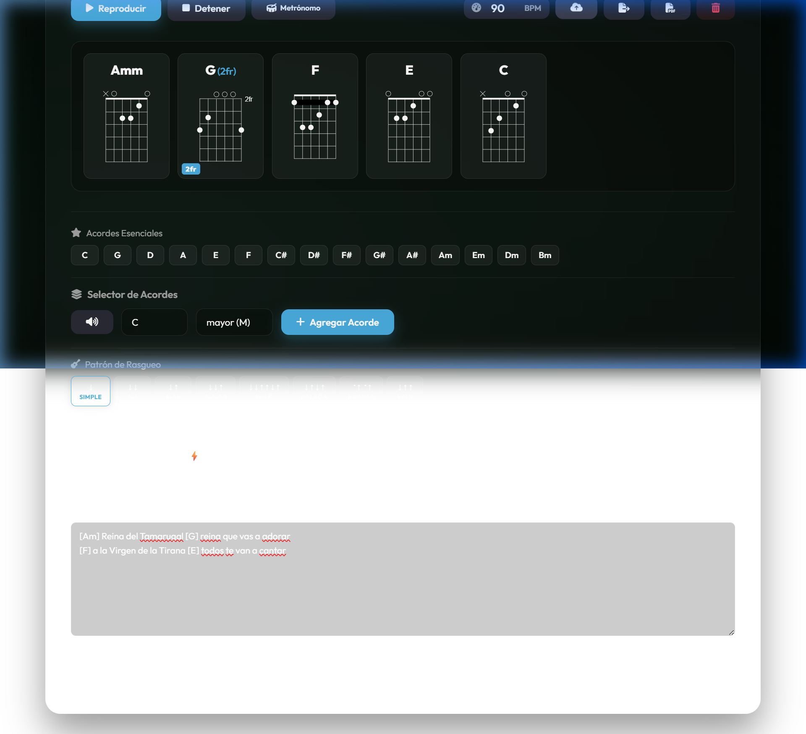
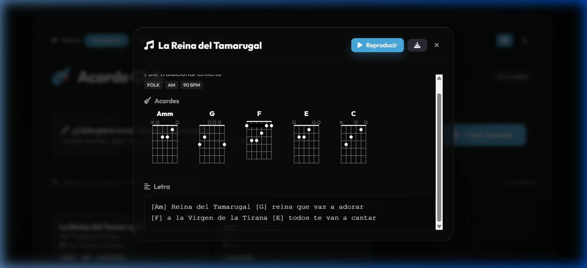
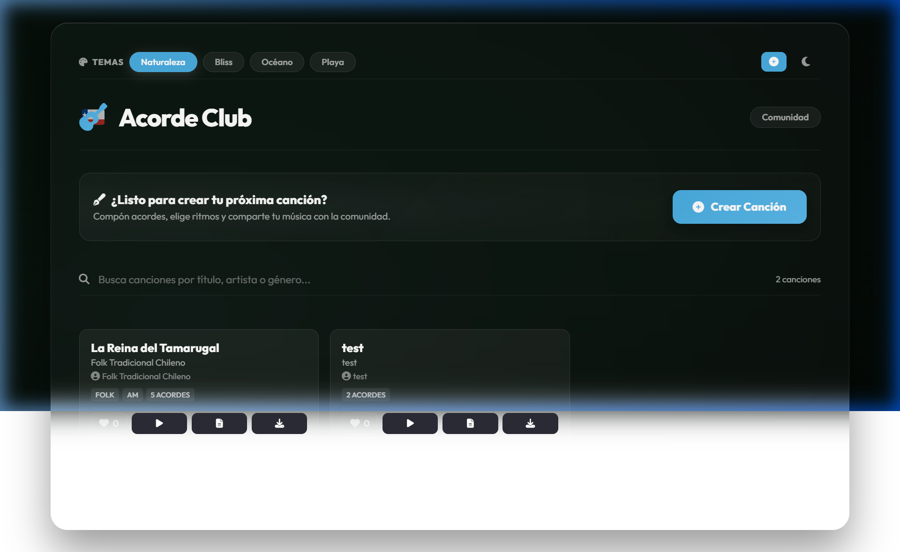

Democratizando la creación y expresión musical en cada rincón de Chile, sin importar los conocimientos técnicos previos.
Creado en Tarapacá para unir a todo el paísLa teoría tradicional y el aprendizaje técnico actúan como barreras de exclusión para miles de personas con inquietudes artísticas.
La música se ve comúnmente como un privilegio de expertos o personas con educación musical formal, marginando el talento natural en comunidades populares.
Acorde Club es una plataforma web interactiva y gratuita que elimina las trabas técnicas para que cualquier persona pueda componer canciones.
No necesitas saber afinar, leer tablaturas ni tener experiencia. Solo necesitas tus ganas de contar una historia y el software te acompañará en el camino.
El espacio de composición está diseñado para guiar y motivar paso a paso al creador novel.

Unir palabras y acordes es tan fácil como escribir un texto común.
[Am] o [G], sobre las palabras exactas donde deben sonar.
La comunidad web de Acorde Club permite a personas de distintas regiones compartir su arte, conectando a través de la música.

Uniendo a comunidades y promoviendo la identidad local desde Tarapacá hacia todo el territorio chileno.
Clases y encuentros vecinales en colegios, bibliotecas y centros sociales de Tarapacá para que jóvenes y adultos mayores compongan su primera canción en una sola sesión.
Digitalizar cantos populares, cuecas y canciones tradicionales del norte y sur de Chile para preservarlos y hacerlos disponibles para principiantes de guitarra.
Conectar a instructores locales y guitarristas con jóvenes talentos de escasos recursos o sin acceso a instrumentos físicos para brindar mentorías colaborativas.
Buscamos el apoyo de Cultura Tarapacá para expandir la plataforma, realizar los primeros talleres comunitarios y crear un cancionero digital popular.
Iniciativa de Joaquín Alejandro Osses Olmedo
Proyecto tecnológico-cultural para la democratización artística